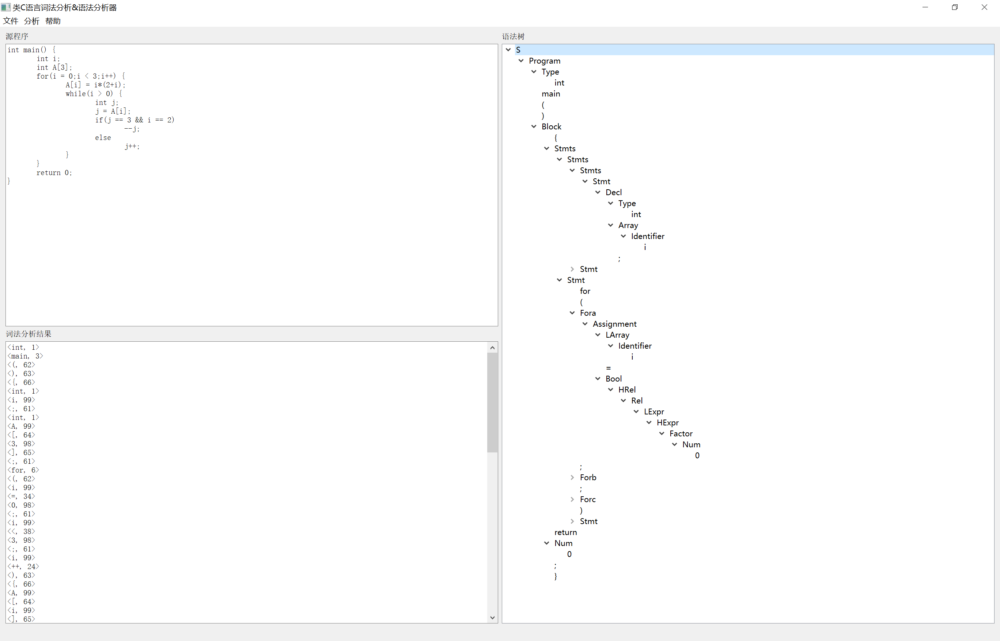
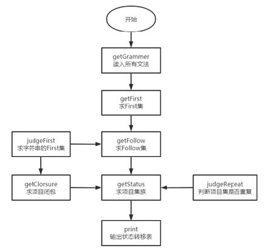
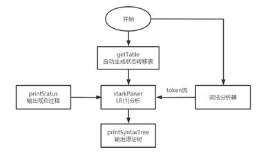

类C语言编译器-语法分析器
语法分析的主要任务就是根据文法，对由词法分析器给出的单词序列进行分析。在本次设计中，采用LR（1）分析方法。由于文法需要转化为状态转移表（即 ACTION - GOTO 表 ），故本语法分析器大致分为生成状态转移表和**语法分析（根据状态转移表进行移进-规约）**两个部分。
最后用Qt做了简单的UI展示，最终效果如下：

生成状态转移表 - GetTable
自动生成状态转移表模块是根据已知文法，首先求各非终结符的First集，接着求每个项目的闭包，并依次构造LR(1)项目集，根据项目集自动构建ACTION表和GOTO表。
流程图如下：（PS：绘制流程图时对LR(1)分析过程还不够清除，流程中Follow集实际并未用到） 
//getTable.h
#ifndef MYPARSER_H
#define MYPARSER_H
#include <fstream>
#include <unordered_map>
#include <unordered_set>
#include <string>
#include <vector>
#include <cstddef>
#include <functional>
//项目
struct Project
{
int pro_num; //表示第pro_num个产生式，0表示拓展的产生式
int dot_position; //当前点的位置，位置的取值比产生式右端长度大1
std::unordered_set<std::string> successors; //后继符
bool operator==(Project& right);
};
struct Grammer
{
std::string left;
std::vector<std::string> right;
};
/*
* hash函数返回哈希值
* eq则为set提供相等操作
* 这样就可以把Project作为set的关系
*/
size_t hasher(const Project& p);
bool eq(const Project& p1, const Project& p2);
class GetTable
{
private:
typedef std::unordered_set<Project, decltype(hasher)*, decltype(eq)*> Status; //项目集
typedef std::unordered_map<int, std::unordered_map<std::string, std::string>> Atable;
typedef std::unordered_map<int, std::unordered_map<std::string, int>> Gtable;
std::unordered_map<std::string, std::unordered_set<int>> index; //存储各非终结符的定义的序列号集合
std::vector<std::string> V, T; //存储非终结集和终结集
std::unordered_map<std::string, std::unordered_set<std::string>> first, follow; //存储first和follow集合
std::unordered_map<int, Status> statuses; //规范状态集
public:
Atable action;
Gtable goTo;
std::vector<Grammer> G;
GetTable();
void initTable(std::ifstream& inGrammar, std::ifstream& inAction, std::ifstream& inGoto);
void fillAction(std::ifstream& in);
void fillGoto(std::ifstream& in);
void get_grammer(std::ifstream& in); //从文件读取文法规则
void get_first(); //获得first集合
void get_follow(); //获得follow集合
bool inVT(std::string s); //判断在V还是T里，1为V
void judge_first(std::vector<std::string> s, std::unordered_set<std::string>& result); //判断串s的first集合是否包含ε
void get_closure(Status& p); //求项目闭包
bool judge_repeat(Status s1, Status s2); //判断两个状态是否重复
bool judge_conflict(Status& s, std::unordered_set<std::string>& result); //判断一个状态是否有移进-归约冲突
void get_status(); //获得状态集合
void print(std::ofstream& o1, std::ofstream& o2); //打印归约产生式子
};
#endif
//getTable.cpp
#include <iostream>
#include "getTable.h"
bool Project::operator==(Project& right)
{
if (this->pro_num == right.pro_num && this->dot_position == right.dot_position && this->successors.size() == right.successors.size())
{
for (auto t : right.successors)
{
if (this->successors.find(t) == this->successors.end())
return false;
}
return true;
}
return false;
}
size_t hasher(const Project& p)
{
return std::hash<int>()(p.pro_num * p.dot_position);
}
bool eq(const Project& p1, const Project& p2)
{
if (p1.pro_num == p2.pro_num && p1.dot_position == p2.dot_position)
return true;
return false;
}
void GetTable::fillAction(std::ifstream& in) {
std::string tmp2, atmp3;
int tmp1;
while (in >> tmp1, in >> tmp2, in >> atmp3) {
action[tmp1][tmp2] = atmp3;
}
}
void GetTable::fillGoto(std::ifstream& in) {
std::string tmp2, atmp3;
int tmp1, gtmp3;
while (in >> tmp1, in >> tmp2, in >> gtmp3) {
goTo[tmp1][tmp2] = gtmp3;
}
}
GetTable::GetTable()
{
//初始化非终结符和终结符
V = { "S", "Program", "Type", "Block", "Stmts", "Decl", "Stmt", "ForAssignment", "Assignment", "Bool", "Rel", "LExpr", "HExpr", "Factor", "Self_op", "HLogic_op", "LLogic_op", "HMath_op", "LMath_op", "Judge_op", "Bool_value", "Array", "Fora", "Forb", "Forc", "HRel", "LArray", "M", "N" };
T = { "(", ")", "main", "int", "bool", "return", ";", "{", "}", "if", "else", "while", "for", "Identifier", "Num", "[", "]", "true", "false", "==", "!=", ">=", "<=", ">", "<", "+", "-", "*", "/", "%", "||", "&&", "++", "--", "!", "-", ";", "=", "ε" }; //这里把ε也作为终结符看待
std::unordered_set<std::string> empty_set;
std::unordered_set<int> empty_set_int;
//初始化first和follow集
for (auto i : V)
{
first.insert({ i, empty_set });
follow.insert({ i, empty_set });
index.insert({ i, empty_set_int });
}
follow["Program"].insert("#");
}
void GetTable::initTable(std::ifstream& inGrammar, std::ifstream& inAction, std::ifstream& inGoto)
{
get_grammer(inGrammar);
while(!inAction.eof()){
int f1;
std::string f2, f3;
inAction >> f1 >> f2 >> f3;
action[f1][f2] = f3;
}
while(!inGoto.eof()){
int f1, f3;
std::string f2;
inGoto >> f1 >> f2 >> f3;
goTo[f1][f2] = f3;
}
}
void GetTable::get_grammer(std::ifstream& in)
{
std::string tmp;
Grammer gtmp;
while (in >> tmp)
{
gtmp.left = tmp;
gtmp.right.clear();
in >> tmp >> tmp;
while (tmp != "#")
{
gtmp.right.push_back(tmp);
in >> tmp;
}
G.push_back(gtmp);
}
for (int i = 0; i < static_cast<int>(G.size()); i++)
index[G[i].left].insert(i);
}
//在非终结符集 返回true 在终结符集 返回false
bool GetTable::inVT(std::string s)
{
for (auto i : V)
{
if (i == s)
return true;
}
return false;
}
void GetTable::get_first()
{
bool change = true; //表示若改动了一处，则需要重新便利
bool is_empty; //表示产生式右端为空串
int t;
//循环，直到没有改动为止，即change = false
while (change)
{
change = false;
//循环每个文法
for (auto& g : G)
{
is_empty = true;
t = 0;
while (is_empty && t < static_cast<int>(g.right.size()))
{
is_empty = false;
if (!inVT(g.right[t]))
{ //产生式右边是终结符
if (first[g.left].find(g.right[t]) == first[g.left].end())
{
//若不在产生式左边非终结符的FIRST集里 则将此终结符插入
first[g.left].insert(g.right[t]);
change = true;
}
continue;
}
//产生式右边是非终结符
for (auto i : first[g.right[t]])
{
if (first[g.left].find(i) == first[g.left].end())
{
//若不在产生式左边的FIRST集里 则将此非终结符的FIRST集插入
first[g.left].insert(i);
change = true;
}
}
if (first[g.right[t]].find("ε") != first[g.right[t]].end())
{
is_empty = true;
t++;
}
}
if (t == static_cast<int>(g.right.size()) && first[g.left].find("ε") == first[g.left].end())
{
first[g.left].insert("ε");
change = true;
}
}
}
first.erase("S");
}
// FIRST(αβγ...)
// 将 αβγ... 的FIRST集返回到result中
void GetTable::judge_first(std::vector<std::string> s, std::unordered_set<std::string>& result)
{
int count = 0;
for (auto i : s)
{
if (!inVT(i))
{
result.insert(i);
break;
}
if (first[i].find("ε") == first[i].end())
{
result.insert(first[i].begin(), first[i].end());
break;
}
result.insert(first[i].begin(), first[i].end());
result.erase("ε");
count++;
}
if (count == static_cast<int>(s.size()))
result.insert("ε");
}
void GetTable::get_follow()
{
//与求first集类似，设置change
bool change = true;
while (change)
{
change = false;
//循环每个文法
std::vector<std::string>::iterator search_next; //向后扫描指针
for (auto& g : G)
{
for (auto it = g.right.begin(); it != g.right.end(); it++)
{
if (!inVT(*it)) //是终结符
continue;
auto original = follow[*it].size();
search_next = it + 1;
if (search_next != g.right.end())
{
std::vector<std::string> tmp(search_next, g.right.end());
std::unordered_set<std::string> stmp; //tmp的FIRST集
judge_first(tmp, stmp);
follow[*it].insert(stmp.begin(), stmp.end());
if (stmp.find("ε") != stmp.end())
{
follow[*it].erase("ε");
//产生式左边FOLLOW集插入到产生式右边FOLLOW集
follow[*it].insert(follow[g.left].begin(), follow[g.left].end());
}
if (original < follow[*it].size())
change = true;
}
else //已分析到末尾
{
follow[*it].insert(follow[g.left].begin(), follow[g.left].end());
if (original < follow[*it].size())
change = true;
}
}
}
}
follow.erase("S");
}
//求项目集的闭包 CLOSURE(I)
void GetTable::get_closure(Status& p)
{
//static int i = 0;
//printf_s("%d", i++);
bool change = true;
Status pptmp;
while (change)
{
change = false;
pptmp = p;
for (auto& pro : pptmp)
{
if (pro.dot_position == static_cast<int>(G[pro.pro_num].right.size())) // · 位于项目末尾
continue;
std::string V = G[pro.pro_num].right[pro.dot_position];
if (!inVT(V)) // · 位于终结符前
continue;
std::unordered_set<std::string> new_successor; //新项目的后继符集
//求新项目的后继符集
if (pro.dot_position == static_cast<int>(G[pro.pro_num].right.size()) - 1) // · 位于项目末尾前1的位置
new_successor = pro.successors;
else
{
std::vector<std::string> vtmp(G[pro.pro_num].right.begin() + pro.dot_position + 1, G[pro.pro_num].right.end());
judge_first(vtmp, new_successor);
if (new_successor.find("ε") != new_successor.end())
{
new_successor.insert(pro.successors.begin(), pro.successors.end());
new_successor.erase("ε");
}
}
Project ptmp;
for (auto& i : index[V])
{
ptmp.pro_num = i;
ptmp.dot_position = 0;
ptmp.successors = new_successor;
if (p.find(ptmp) == p.end()) //项目不存在项目集中
{
p.insert(ptmp);
change = true;
}
else
{
auto s = p.find(ptmp);
auto original = s->successors.size();
ptmp.successors.insert(s->successors.begin(), s->successors.end());
p.erase(*s);
p.insert(ptmp);
if (original < ptmp.successors.size())
change = true;
}
}
}
}
}
//判断项目集是否重复
bool GetTable::judge_repeat(Status s1, Status s2)
{
if (s1.size() == s2.size())
{
for (auto pros : s1)
{
if (s2.find(pros) == s2.end())
return false;
else
{
Project tmp = *(s2.find(pros));
if (!(tmp == pros))
return false;
}
}
return true;
}
return false;
}
//检查项目集是否有冲突
bool GetTable::judge_conflict(Status& s, std::unordered_set<std::string>& result)
{
bool flag = false;
std::unordered_set<std::string> tmp;
for (auto pro : s)
{
if (pro.dot_position == static_cast<int>(G[pro.pro_num].right.size())) // · 位于项目末尾
tmp.insert(pro.successors.begin(), pro.successors.end());
}
for (auto pro : s)
{
if (pro.dot_position < static_cast<int>(G[pro.pro_num].right.size()))
{
std::string next = G[pro.pro_num].right[pro.dot_position];
if (tmp.find(next) != tmp.end())
{
result.insert(next);
flag = true;
}
}
}
return flag;
}
void GetTable::get_status()
{
//初始化第一个状态0（项目集I0）
int t = 0;
Project ptmp;
ptmp.dot_position = 0;
ptmp.pro_num = 0;
ptmp.successors = { "#" };
Status tmp_status(10, hasher, eq);
tmp_status.insert(ptmp);
get_closure(tmp_status);
statuses.insert({ t, tmp_status });
//获取状态集合
bool change = true;
std::unordered_set<int> record; //记录已经求过的状态(项目集)
std::unordered_map<int, Status> sstmp;
std::unordered_set<std::string> conflict;
while (change)
{
change = false;
sstmp = statuses;
for (auto& sta : sstmp)
{
if (record.find(sta.first) != record.end())
continue;
record.insert(sta.first);
//judge_conflict(sta.second, conflict);
//分析 构造ACTION-GOTO表
std::unordered_set<std::string> record_status;
for (auto pros : sta.second)
{
if (G[pros.pro_num].right[0] == "ε" || pros.dot_position == static_cast<int>(G[pros.pro_num].right.size())) //文法产生式右端为ε 或者 项目已分析·到末尾
{
for (auto sucess : pros.successors)
{
//若项目[A→α·，a]属于Ik，则置ACTION[k, a]为 rj；
if (action[sta.first].find(sucess) == action[sta.first].end())
action[sta.first][sucess] = "r" + std::to_string(pros.pro_num);
}
continue;
}
std::string trans = G[pros.pro_num].right[pros.dot_position];
if (record_status.find(trans) != record_status.end())
continue;
record_status.insert(trans);
tmp_status.clear();
ptmp.pro_num = pros.pro_num;
ptmp.dot_position = pros.dot_position + 1;
ptmp.successors = pros.successors;
tmp_status.insert(ptmp);
//protmp.dot_position < static_cast<int>(G[protmp.pro_num].right.size())
for (auto protmp : sta.second)
{
if (!(protmp == pros) && G[protmp.pro_num].right[protmp.dot_position] == trans)
{
ptmp.pro_num = protmp.pro_num;
ptmp.dot_position = protmp.dot_position + 1;
ptmp.successors = protmp.successors;
tmp_status.insert(ptmp);
}
}
get_closure(tmp_status);
bool flag = true;
for (auto s : sstmp)
{
if (judge_repeat(s.second, tmp_status))
{
if (inVT(trans))
goTo[sta.first][trans] = s.first;
else //若项目[A→α·aβ, b]属于Ik且GO(Ik, a)＝Ij，a为终结符，则置ACTION[k, a]为 sj
action[sta.first][trans] = "s" + std::to_string(s.first);
flag = false;
break;
}
}
if (!flag)
continue;
statuses.insert({ ++t, tmp_status });
change = true;
//填写goTo表和action表
if (inVT(trans))
goTo[sta.first][trans] = t;
else
action[sta.first][trans] = "s" + std::to_string(t);
}
}
}
//添加acc
action[goTo[0]["Program"]]["#"] = "acc";
}
void GetTable::print(std::ofstream& o1, std::ofstream& o2)
{
for (auto f1 : action)
{
for (auto f2 : f1.second)
o1 << f1.first << " " << f2.first << " " << f2.second << std::endl;
}
for (auto f1 : goTo)
{
for (auto f2 : f1.second)
o2 << f1.first << " " << f2.first << " " << f2.second << std::endl;
}
}
//int main()
//{
// GetTable test;
// std::ifstream gin("grammer.txt");
// std::ofstream action("action.out");
// std::ofstream goTo("goto.out");
// test.get_grammer(gin);
// test.get_first();
// test.get_follow();
// test.get_status();
// test.print(action, goTo);
//
// gin.close();
// action.close();
// goTo.close();
// return 0;
//}
语法分析 - Parser
语法分析部分是一个使用 LR(1)分析方法的类 C 语言分析程序，可以根据已知的类 C 语言文法，由程序自动生成该文法的 ACTION 表和 GOTO 表以进行 LR 分析。语法分析器的使用过程中可以根据词法分析器的生成结果正确判断是否是属于本文法的句子，并给出分析过程，最后使用 UI 界面输出相应的语法树。
流程图如下： 
//Parser.h
#include <fstream>
#include <sstream>
#include <iostream>
#include <iomanip>
#include <string>
#include <algorithm>
#include <unordered_set>
#include <vector>
#include <stack>
#include "myLexer.h"
#include "getTable.h"
#include <QFile>
#include <QTextStream>
typedef struct PTnode {
std::string name;
int parent;
std::vector<int> child;
std::string s = "";
bool operator ==(const PTnode& x) const {
if (this->name == x.name && this->parent == x.parent) {
return true;
} else {
return false;
}
}
}PTnode;
typedef struct PTree {
std::vector<PTnode> treeNodes;
int root;
}PTree;
class Parser {
private:
GetTable table;
public:
PTree syntaxTree;
Parser() { syntaxTree.root = 0; };
void getTable(std::ifstream& inGrammar, std::ofstream& outAction, std::ofstream& outGoto);
void initTable(std::ifstream& inGrammar, std::ifstream& inAction, std::ifstream& inGoto);
void printStatus(std::ofstream& out, int rank, std::stack<int>& status, std::stack<std::string>& symbol, std::vector<Word> sentence, int loc);
bool stack_parser(std::istringstream &in, std::ofstream &out);
// void run();
void printSpace(std::ofstream &out, int num);
void printSyntaxTree(std::ofstream& out);
};
//Parser.cpp
#include "Parser.h"
void Parser::getTable(std::ifstream& inGrammar, std::ofstream& outAction, std::ofstream& outGoto) {
table.get_grammer(inGrammar);
table.get_first();
table.get_follow();
table.get_status();
table.print(outAction, outGoto);
}
void Parser::initTable(std::ifstream& inGrammar, std::ifstream& inAction, std::ifstream& inGoto){
table.initTable(inGrammar, inAction, inGoto);
}
void Parser::printStatus(std::ofstream& out, int rank, std::stack<int>& status,
std::stack<std::string>& symbol, std::vector<Word> sentence, int loc) {
std::cout << std::setiosflags(std::ios::left);
std::cout << std::setw(10) << rank;
out << rank;
if (rank < 10) {
printSpace(out, 20 - 2);
}
else if (rank < 100) {
printSpace(out, 20 - 4);
}
else {
printSpace(out, 20 - 6);
}
std::string s = "";
std::stack<int> help1;
int count = 0;
while (!status.empty()) {
int num = status.top();
status.pop();
s = std::to_string(num) + ' ' + s;
help1.push(num);
count += std::to_string(num).length() * 2 + 1;
}
while (!help1.empty()) {
int num = help1.top();
help1.pop();
status.push(num);
}
std::cout << std::setw(150) << s;
out << s;
printSpace(out, 400 - count);
s = "";
count = 0;
std::stack<std::string> help2;
while (!symbol.empty()) {
std::string top = symbol.top();
symbol.pop();
s = top + " " + s;
help2.push(top);
count += top.length() * 2 + 1;
}
while (!help2.empty()) {
std::string num = help2.top();
help2.pop();
symbol.push(num);
}
std::cout << std::setw(150) << s;
out << s;
printSpace(out, 400 - count);
for (int i = loc; i < static_cast<int>(sentence.size()); i++) {
std::string s = "";
if (sentence[i].getTag() == 98)
s = "Num";
else if (sentence[i].getTag() == 99)
s = "Identifier";
else
s = sentence[i].getLexeme();
std::cout << s << " ";
out << s << " ";
}
std::cout << std::endl;
out << std::endl;
}
bool Parser::stack_parser(std::istringstream &in, std::ofstream &out) {
Lexer mylex;
std::cout<< std::setiosflags(std::ios::left);
std::cout << std::setw(10) << "步骤";
std::cout << std::setw(150) << "状态";
std::cout << std::setw(150) << "符号";
std::cout << "输入串" << std::endl;
out << "步骤";
printSpace(out, 12);
out << "状态";
printSpace(out, 392);
out << "符号";
printSpace(out, 392);
out << "输入串" << std::endl;
std::vector<Word> fileResource;
while (!in.eof()) {
fileResource.push_back(mylex.scan(in));
}
std::stack<int> statusStack;
std::stack<std::string> symbolStack;
statusStack.push(0);
symbolStack.push("#");
int loc = 0, rank = 1;
std::string left = "", right = "";
while(1) {
printStatus(out, rank++, statusStack, symbolStack, fileResource, loc);
Word w = fileResource[loc];
int top = statusStack.top();
std::string T;
int flag = 0;
if (w.getTag() == Tag::NUM){
T = "Num";
flag = 1;
}
else if (w.getTag() == Tag::ID){
T = "Identifier";
flag = 1;
}
else
T = w.getLexeme();
if(table.action[top].find(T) == table.action[top].end())
return false;
std::string act = table.action[top][T];
if(act[0] == 's') {
loc++;
statusStack.push(std::atoi(&act[1]));
symbolStack.push(T);
std::vector<int> temp;
if(!flag){
PTnode insert;
insert.name= T;
insert.parent=-2; //-2表示父结点待计算 -1表示无父结点
insert.child=temp;
insert.s="";
syntaxTree.treeNodes.push_back(insert);
}
else{
PTnode insert;
insert.name= T;
insert.parent=-2;
insert.child=temp;
insert.s=w.getLexeme();
syntaxTree.treeNodes.push_back(insert);
}
} else if(act[0] == 'r') {
int status = std::atoi(&act[1]);
int count = static_cast<int>(table.G[status].right.size());
std::vector<int> child;
PTnode insert;
insert.name= table.G[status].left;
insert.parent=-2;
insert.child=child;
insert.s="";
syntaxTree.treeNodes.push_back(insert);
int parentIndex = static_cast<int>(syntaxTree.treeNodes.size()) - 1;
if (count == 1 && table.G[status].right[0] == "ε") {
count = 0;
}
while (count != 0) {
std::string name = symbolStack.top();
for (int i = static_cast<int>(syntaxTree.treeNodes.size()) - 2; i >= 0; i--) {
if (syntaxTree.treeNodes[i].name == name and syntaxTree.treeNodes[i].parent == -2) {
syntaxTree.treeNodes[i].parent = parentIndex;
syntaxTree.treeNodes[static_cast<int>(syntaxTree.treeNodes.size()) - 1].child.push_back(i);
break;
}
}
symbolStack.pop();
statusStack.pop();
count--;
}
int top = statusStack.top();
symbolStack.push(table.G[status].left);
statusStack.push(table.goTo[top][table.G[status].left]);
} else {
return true;
}
}
return false;
}
void Parser::printSpace(std::ofstream& out, int num) {
for (int i = 0; i < num; i++) {
out << " ";
}
}
void Parser::printSyntaxTree(std::ofstream& out) {
std::vector<int> temp;
syntaxTree.treeNodes[static_cast<int>(syntaxTree.treeNodes.size()) - 1].parent = static_cast<int>(syntaxTree.treeNodes.size());
PTnode insert;
insert.name= "S";
insert.parent=-1;
insert.child=temp;
insert.s="";
syntaxTree.treeNodes.push_back(insert);
for (int i = 0; i < static_cast<int>(syntaxTree.treeNodes.size()); i++) {
out << i << " " << syntaxTree.treeNodes[i].name << " " << syntaxTree.treeNodes[i].parent<<" ";
for (auto v : syntaxTree.treeNodes[i].child) {
out << v << ",";
}
out << std::endl;
}
}
//void Parser::run() {
// std::ifstream lin("test.txt");
// std::ofstream parser("parser.out");
// std::ofstream tree("syntaxTree.out");
// getTable();
// std::cout << "ACTION表、GOTO表构造完成，接下来显示规约过程" << std::endl;
// stack_parser(lin, parser);
// std::cout << "语法分析完成，正在构造语法树" << std::endl;
// printSyntaxTree(tree);
// std::cout << "语法树构造完成" << std::endl;
// lin.close();
// parser.close();
// tree.close();
//}
参考博客：